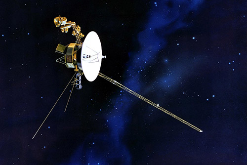

«Вояджер-1»— американский космический зонд, исследующий Солнечную систему с 5 сентября 1977 года. Основная миссия космической программы «Вояджер» заключалась в исследовании Юпитера и Сатурна. «Вояджер-1» стал первым космическим зондом, который сделал детальные снимки спутников этих планет. По завершении основной миссии он приступил к выполнению дополнительной миссии по исследованию отдалённых регионов Солнечной системы, включая пояс Койпера и границу гелиосферы.
Идея проекта «Вояджер» (Voyager) была выдвинута аэрокосмическим агентством NASA в конце 60-х годов. В 1976 году должно было случиться редкое для Солнечной системы событие — раз в 177 лет Юпитер, Сатурн, Уран и Нептун на три года оказываются по одну сторону от нашего светила, так что с Земли они видны на небольшом участке неба. Инженеры NASA решили использовать это явление, чтобы запустить к газовым гигантам две исследовательские станции — удачное расположение планет позволяло зондам совершить гравитационные маневры и сэкономить топливо. В 1977 году «Вояджер-1» и его не менее известный близнец «Вояджер-2» отправились исследовать тогда еще малоизученные миры. Несмотря на номер в названии, первым в космос был запущен корабль «Вояджер-2». Дело в том, что зонды должны были облететь планеты-гиганты с разных сторон, чтобы собрать о них как можно больше информации. «Вояджер-2» летел по так называемой медленной траектории и должен был сблизиться со всеми четырьмя планетами, в то время как «Вояджер-1» исследовал только Юпитер и Сатурн и путь его был заметно короче. Поскольку ученые с самого начала знали, что запущенный позже зонд достигнет астероидного пояса между Марсом и Юпитером раньше, чем его брат-близнец, то и назвали его соответственно. Прежде чем отправить «Вояджеры» в космическое пространство, инженеры NASA рассмотрели более 10 тысяч возможных траекторий полета, после чего выбрали лишь одну (и, как оказалось, удачную). Тем не менее, даже после такой детальной подготовки многие были не уверены в том, что миссия удастся. Почти сразу после запуска у «Вояджера-2» возникли технические неполадки, поэтому инженеры не спешили отправлять в космос второй аппарат. Изначально запуск «Вояджера-1» должен был состояться 1 сентября, однако его откладывали дважды. Несмотря на то, что агентство NASA считает полет зонда «точным и безупречным», воспоминания участников миссии говорят об обратном. Как рассказывает Джон Касани, руководитель программы, сразу после старта он и Чарльз Колейз, советник миссии «Вояджер» и эксперт по навигации, находились в диспетчерской центра запусков на мысе Канаверал, когда им пришли плохие показатели с ракеты-носителя Titan IIIE («Титан-Центавр»). Казалось, что «Вояджер-1» не достигнет цели. «Я был напуган. Мы были напуганы», — поделился Касани. Колейз повернулся к Касани, который сидел рядом: «Джон, мы можем потерпеть неудачу. Нам не хватает скорости».В топливной магистрали второй ступени «Титана» обнаружилась крошечная, изначально не замеченная утечка, которая создала серьезные проблемы во время запуска. Даже если бы «Вояджер-1» достиг пределов околоземной орбиты, ему могло бы не хватить скорости, чтобы успешно долететь до своей следующей цели — Юпитера. Тем не менее, ракета-носитель обладала запасом топлива, которое могло спасти ситуацию. Главная опасность заключалась в том, что пустые топливные насосы могли взорваться и повредить «Вояджер-1», если бы горючее было полностью израсходовано. Однако «Титан-Центавра» доставил зонд на орбиту за три секунды до того, как у него закончилось топливо, и миссия была спасена.
Масса аппарата при старте составляла 798 кг, масса полезной нагрузки — 86 кг. Длина — 2,5 м. Корпус аппарата — десятигранная призма с центральным проёмом. На корпус посажен отражатель направленной антенны диаметром 3,66 метра. Электропитание обеспечивают три вынесенных на штанге радиоизотопных термоэлектрических генератора, использующих плутоний-238 в виде окиси (в силу удалённости от Солнца солнечные батареи были бы бесполезны). На момент старта общее тепловыделение генераторов составляло около 7 киловатт, их кремний-германиевые термопары обеспечивали 470 ватт электрической мощности. По мере распада плутония-238 (его период полураспада составляет 87,7 года) и деградации термопар мощность термоэлектрических генераторов падает. На 29.11.2021 остаток плутония-238 равен 70.5% от начального, к 2025 году тепловыделение упадёт до 68.8% от начального. Кроме штанги электрогенераторов, к корпусу прикреплены ещё две: штанга с научными приборами и отдельная штанга магнитометра
Пятого сентября 1977 года состоялся запуск межпланетной станции «Вояджер-1» — первого космического аппарата, который вышел в межзвездное пространство. Хотя его миссия должна была продлиться не более пяти лет, зонд до сих пор работает и передает на Землю ценную информацию. За прошедшее время аппарат успел удалиться от поверхности нашей планеты на расстояние в 139,6 астрономической единицы.
На борту зонда бережно размещены данные о нас. На специальный диск были записаны наши координаты относительно ближайших звезд, изображения форм жизни, приветствие на 55 языках, музыка, сообщения и звуки природы. И все это добро сейчас наивно мчится в лапы какому-нибудь Мегатрону Альтроновичу, а может и к Алисе Селезневой.